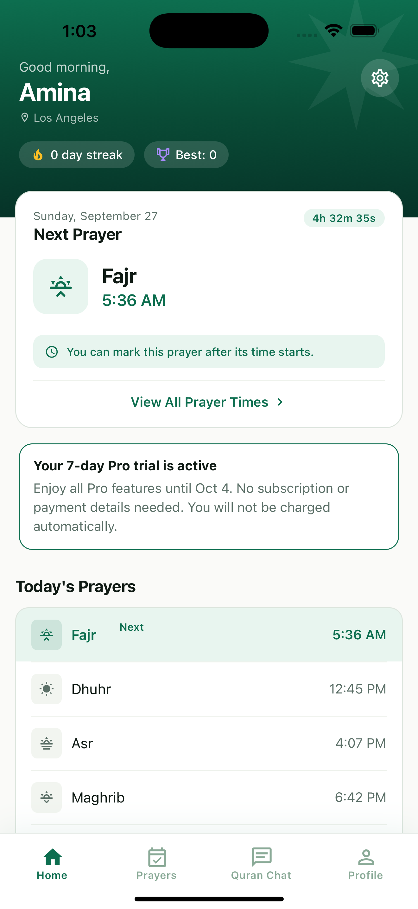

Your prayer times, close at hand.
Find Fajr through Isha times for your location. Choose your calculation method and set reminders with adhan audio.
A little more consistency, every day
Make space for your next prayer. Find your times, keep track of your progress and bring everyday questions to Quran Chat.
Free to download. Your one-time Pro trial needs no subscription or payment details.

Start with the next prayer
A daily companion for the small actions that make a difference.
Find Fajr through Isha times for your location. Choose your calculation method and set reminders with adhan audio.
Mark prayers complete, follow your streak and look back at your history. Keep track of missed prayers and makeups at your own pace.
Explore Quran Chat's AI-generated answers and references. Save conversations with Pro and return to the ideas that matter to you.
Quran Chat is for learning and reflection. AI can make mistakes; check references and consult a qualified scholar for religious rulings.
Your first seven days of Pro
Existing and new free accounts get one automatic seven-day Pro trial when eligible account features are first used.
After the trial, keep using free features or choose a paid subscription. Free accounts have five successful Quran Chat responses in total. Trial and paid Pro responses don't use that allowance; previous free usage counts.
Good to know
Yes. Continue as a guest for prayer times and Ramadan timing information. Sign in to save your prayer tracking and use Quran Chat.
No. This automatic app trial is not a subscription. It ends on the date shown in the app without charging you. A paid subscription only starts if you choose one and confirm the store purchase.
Your account returns to free access. You can continue using free features and any remaining portion of your five total free Quran Chat responses. Upgrade to Pro when it suits you. Each account receives one automatic trial.
Yes. See location-based Suhoor and Iftar times, record fasts and follow your Ramadan progress. Prayer times can differ from local mosque announcements; use the calculation settings appropriate for your community.
Email support@namaznow.app. Password reset is available from the sign-in screen. You can delete your account from the app's settings.
One prayer at a time
Start with today's prayer times.
Get Namaz Now ↗